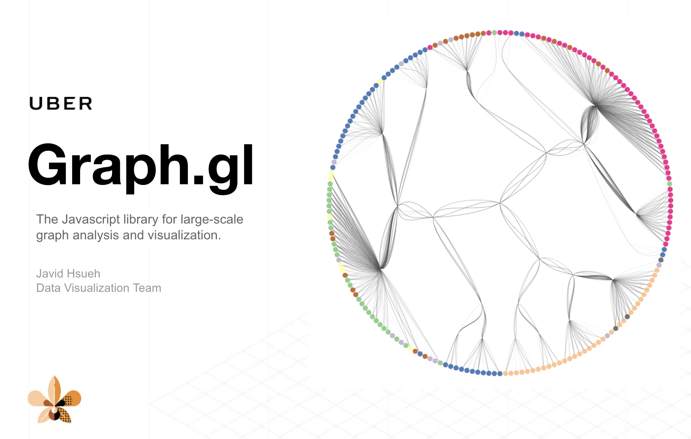

Staff Engineer at Apple
Making sense
of complexity.
I’m Javid, a frontend and data visualization engineer. I build interfaces that make complex information tangible, explorable, and useful.
Explore my work ↓Engineering × visualization × interactionSelected work, open source & research
Selected work
From connected data to shared discovery.

Open source / Graph visualizationTools for exploration
Graph.gl
A React toolkit for visualizing large networks. Flexible styles and layouts turn connected data into interfaces people can explore.
Graph drawing · React · Interactive systems
Explore the project ↗Behind the work
Graph.gl brings graph rendering, interaction, and extensible layouts together. It grew from work on graph visualization at Uber.
View source on GitHub Exploratorium / Interactive exhibit
Exploratorium / Interactive exhibitData you can touch
Mapping
Migrations
Making marine animal movement visible through a shared, tangible interface. An invitation to compare patterns, ask questions, and discover together.
Exhibit design · Tangible interaction · Marine data
Discover the exhibit ↗Behind the work
Developed at the Exploratorium, this work explores how visual comparison and physical species cards can support conversations about animal behavior. The exhibit is currently listed as not on display.
Watch the project videoQuestions worth exploring
Research in motion, comparison, and connection.
Selected publications +
A Study of Using Motion for Comparative Visualization
Chien-Hsin Hsueh, Jia-Kai Chou, Kwan-Liu Ma · IEEE Pacific Visualization Symposium, 2015
Fostering Comparisons: Designing an Interactive Exhibit that Visualizes Marine Animal Behaviors
Chien-Hsin Hsueh, Jacqueline Chu, Kwan-Liu Ma, Joyce Ma, Jennifer Frazier · IEEE Pacific Visualization Symposium, 2015
An Efficient Framework for Generating Storyline Visualizations from Streaming Data
Yuzuru Tanahashi, Chien-Hsin Hsueh, Kwan-Liu Ma · IEEE Transactions on Visualization and Computer Graphics, 2015
At the intersection
of systems & sense.
I’m a Staff Engineer at Apple, with a background in frontend engineering, information visualization, and visual analytics.
Previously, my work at Uber spanned graph visualization, machine learning tools, and visual analytics. At the Exploratorium, I helped turn marine animal data into an interactive exhibit.
I earned my master’s in Computer Science at UC Davis, working with Kwan-Liu Ma in the Visualization and Interface Design Innovation research group.